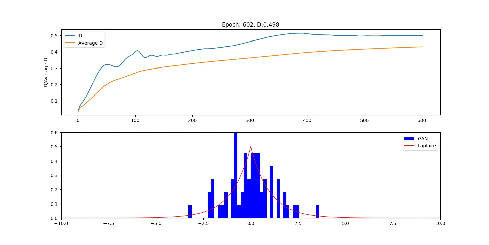
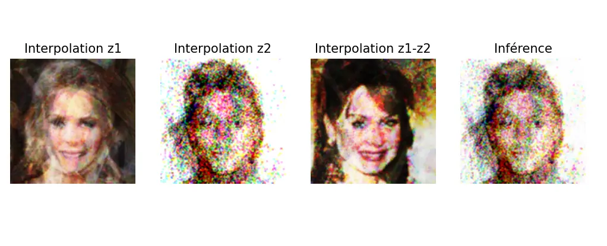
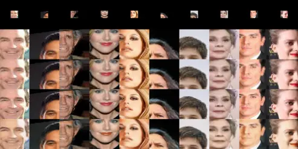
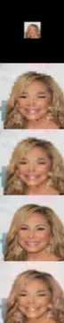
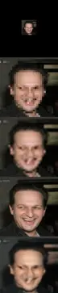

Étude et implémentation de modèles génératifs et d'architectures d'apprentissage profond sous TensorFlow / Keras.
Conception d'un premier GAN apprenant à projeter un bruit aléatoire gaussien vers une distribution de Laplace continue via un entraînement antagoniste.

Distribution de Laplace en rouge et résultat GAN en bleu.
D représente le nombre de vrai positif sur le nombre de résultat renvoyé par le discriminateur, l'objectif étant d'arriver à 0.5, le moment où le discriminateur n'arrive plus à différencier les résultats de générateur et ici la distribution de Laplace.
Génération de portraits synthétiques sur le jeu de données CelebA. Validation de la régularité de l'espace latent par interpolation vectorielle entre différents profils générés.

Reconstruction de détails haute fréquence à partir d'entrées basse résolution (32x32 vers 128x128). L'encodeur compresse les motifs visuels en un espace compact, tandis que le décodeur reconstruit le signal à l'aide de convolutions transposées.
Comparaison des performances de reconstruction face aux algorithmes d'interpolation traditionnels :

La première ligne correspond à l'image donnée en entrée , la deuxième ligne correspond au filtre du plus proche voisin, la troisième au filtre bicubique, la quatrième à l'image originale et la dernière aux résultats obtenus.
Chaque programme s'arrête après un nombre de valeurs consécutives de D sans amélioration réelle.
Des morceaux aléatoires sont prélevés dans l'image de base pour ensuite entraîner le réseau sur des parties spécifiques d'un visage (yeux, menton, etc...).
Résultat sur une image complète sur laquelle le réseau ne s'est pas entraîné :

